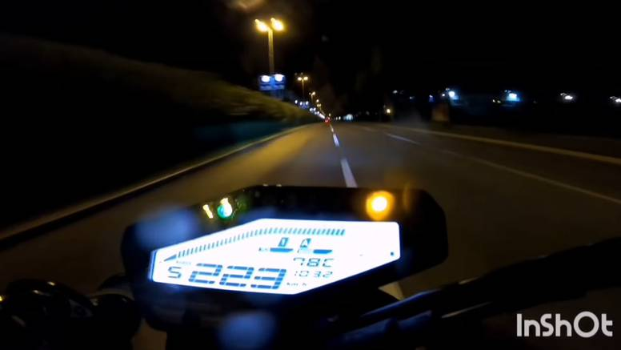

Ulovili Bad Boya u Splitu: Ostao bez motora, dozvole i slobode
Na YouTubeu je objavio niz videa vožnji na Yamahi MT 09. Postavio je nekoliko postova u kojima vozi po Splitu i okolici radeći prekršaje koji mogu ugroziti druge, a posebno je zastrašujući onaj u kojem u noćnoj vožnji po kiši ulicom Domovinskom rata u Splitu juri preko 220 kilometara na sat. U jednom od videa vidi se i kako se skoro zabio u vozilo Hitne pomoći.Iz policije navode da su utvrdili postojanje osnovane sumnje da je 16.listopada 2020.godine upravljajući motociklom na području Splita ostvario obilježja većeg broja prekršaja iz članka 53.st.1. (prekoračenje brzine u naseljenom mjestu) i čl.59.st.1. ( prolazak kroz crveno svjetlo) Zakona o sigurnosti prometa na cestama. Zadržan je u splitskom zatvoru, motocikl mu je zaplijenjen, a dobio je i zabranu upravljanja A kategorijom vozila. U petak su ga doveli na nadležni Općinski prekršajni sud u Splitu.

Slika kojojm se mladić hvalio po društvenim mrežama.